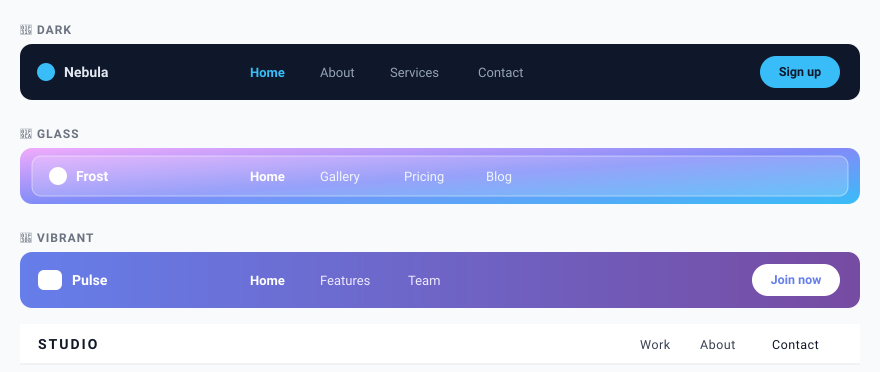

Themes & Categories
Giuliomax Menu Builder ships with 50 professionally designed themes organized into 10 style categories. Pick one, click Apply, and your menu is transformed instantly.

Browsing themes
Open Menu Builder in your WordPress admin, then click the Themes tab in the left sidebar. You will see a grid of live preview cards — each card shows a miniature version of what the menu will look like on your site. Use the category filter chips at the top to narrow down the selection.
The 10 style categories
| Category | Character | Best for |
|---|---|---|
| Dark | Deep backgrounds, light text, high contrast | Tech, gaming, creative agencies |
| Minimal | White or near-white, fine typography, lots of space | Portfolios, SaaS, blogs |
| Vibrant | Bold colors, strong accents | Lifestyle, e-commerce, events |
| Creative | Unconventional layouts, gradient accents | Design studios, artists |
| Corporate | Neutral tones, professional feel | Business, finance, legal |
| Nature | Earthy greens and browns | Food, wellness, sustainability |
| Elegant | Serif-inspired, muted palette, gold accents | Luxury, hospitality, fashion |
| Retro | Warm tones, rounded forms, vintage feel | Food & drink, boutiques |
| Glass | Frosted glass / backdrop-blur effect | Modern apps, crypto, tech startups |
| Playful | Bright colors, rounded corners, friendly tone | Kids, education, non-profits |
Applying a theme
- Go to Menu Builder and open the Themes section.
- Optionally filter by category using the chips at the top.
- Hover over any theme card to see a larger preview.
- Click Apply on the theme you want.
- A confirmation banner appears. Click Save or navigate away — the theme is already saved.
Applying a theme is non-destructive. It writes default values for all style properties, but any manual customizations you make afterwards are preserved and override the theme defaults.
Customizing after applying
After you apply a theme, every property it sets is available for manual override in the style sections of Menu Builder (Colors, Typography, Layout):
- Colors — background, text, hover, active, border
- Typography — font family (70+ Google Fonts), size, weight, letter spacing, text transform
- Spacing — padding, gap between items
- Shape — border radius for the bar and dropdown panels
- Effects — box shadow, backdrop blur (for Glass themes), entrance animations
- Gradient — apply a gradient to the nav bar background using the built-in gradient picker
Per-instance overrides
The active theme is a global setting — it applies to every instance of the menu on your site. If you need different visual styles for different menus (e.g. a header nav and a footer nav), the recommended approach is to use the Colors section to set base values and override specific properties using custom CSS targeting each menu’s location wrapper.
You can place two menu locations on the same page using:
[menux location="primary"]
[menux location="footer"]